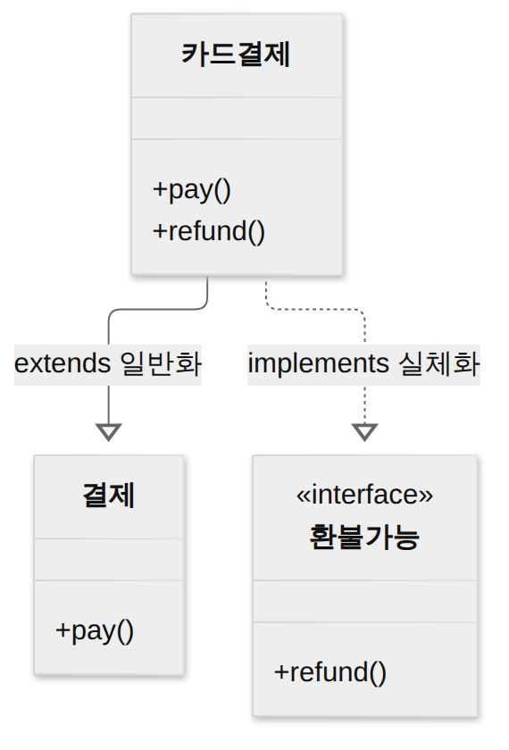

D013 · 객체지향 — 구성요소·캡상다추·SOLID
A3 어제까지는 “모듈을 잘 나누는 법”을 봤어요. 모듈 사이는 덜 얽히게(결합도↓), 모듈 안은 한 목적으로 뭉치게(응집도↑). 오늘은 그 모듈 단위가 객체일 때 쓰는 말과 원칙이에요. 클래스·상속·인터페이스는 매일 쓰는 개념이라 익숙하겠지만, 시험은 용어의 정의 문장(메시지가 뭐고 메서드가 뭔지, 캡슐화와 정보 은닉이 어떻게 다른지)과 SOLID 다섯 원칙의 짝 바꾸기를 물어요. 현업 감각으로 “대충 아는” 상태에서 시험 문장으로 정확히 고르는 상태로 옮기는 게 오늘 목표예요.
- 구성요소 클래스·객체·인스턴스·속성·메서드·메시지를 구별할 수 있다(클래스 = 틀, 인스턴스 = 틀로 찍은 실체, 메시지 = 객체에 연산을 요청하는 수단)
- 특징 캡슐화·정보 은닉·상속·다형성·추상화를 구별할 수 있다. 특히 캡슐화(묶기) vs 정보 은닉(감추기), 오버로딩 vs 오버라이딩
- SOLID 5원칙(SRP·OCP·LSP·ISP·DIP)의 이름·뜻을 짝짓고, 위반 상황을 보고 어느 원칙인지 고를 수 있다
- SOLID와 객체지향 특징이 어제 배운 결합도↓·응집도↑와 어떻게 이어지는지 설명할 수 있다
- 객체지향 분석 방법론(럼바우·부치·제이콥슨·코드-요든·워프스-브록)의 이름-특징 짝을 구별할 수 있다
1. A3 지도 — 오늘 위치
2. 왜 객체지향이 생겼나
D004에서 분석 방법을 “기능을 쪼개나(구조적) / 객체를 찾나(객체지향)”로 나눴던 것 기억나세요? 구조적(절차적) 방식은 데이터와 그 데이터를 처리하는 함수를 따로 둬요. 주문 데이터 구조는 한 곳에 있고, 주문을 계산·취소·출력하는 함수는 여러 파일에 흩어져 있어요. 이러면 주문 데이터 구조가 하나 바뀔 때 그걸 건드리는 함수를 전부 찾아 고쳐야 해요. 어제 배운 말로 하면 데이터를 공유하는 함수들 사이의 결합도가 높은 상태예요.
객체지향은 이 문제를 “데이터와 그 데이터를 다루는 연산을 한 덩어리(객체)로 묶고, 객체끼리는 부탁(메시지)으로만 협력하게 하자”로 풀었어요. 주문 데이터를 바꿔도 주문 객체 안의 메서드만 고치면 되고, 바깥은 “주문아, 취소해 줘”라고 부탁하는 방식이 그대로라서 영향이 퍼지지 않아요. 현실 세계의 사물(주문, 고객, 상품)을 그대로 모형으로 옮기기 쉽고, 이미 만든 클래스를 상속·조합으로 다시 쓰기 쉬워서 재사용·확장·유지보수에 유리해요. 대가는 설계가 처음에 더 어렵고, 객체 수가 많아지면 전체 흐름을 한눈에 보기 어렵다는 점이에요.
3. 구성요소 — 클래스·객체·인스턴스·속성·메서드·메시지
객체를 묶기로 했으니 이제 묶음을 부르는 말이 필요해요. 시험에서는 이 용어들을 정의 문장으로 주고 고르게 하니, 하나씩 정확한 문장으로 잡아 둘게요.
객체(Object)는 데이터(속성)와 그 데이터를 처리하는 함수(메서드)를 하나로 묶은 실체예요. 현실의 사물이나 개념 하나에 대응해요. 주문 한 건, 고객 한 명이 각각 객체예요. 객체는 자기 상태를 가지고(이 주문은 결제됨), 자기 행동을 할 수 있어요(이 주문을 취소한다).
클래스(Class)는 공통된 속성과 연산을 가진 객체들을 하나로 정의한 틀이에요. 교재에 따라 “객체의 집합”, “객체를 만드는 설계도·뼈대”라고 써요. class Order는 “주문이라면 번호와 상태가 있고 취소할 수 있다”는 틀이고, 이 틀 자체는 특정 주문 한 건이 아니에요. 상속 관계에서 위쪽 클래스를 상위(슈퍼·부모) 클래스, 아래쪽을 하위(서브·자식) 클래스라고 불러요.
인스턴스(Instance)는 클래스라는 틀로 실제로 찍어 낸 객체 하나하나예요. new Order()로 만든 order1, order2가 Order 클래스의 인스턴스예요. 클래스로 인스턴스를 만드는 과정을 인스턴스화(Instantiation)라고 해요. “객체”와 “인스턴스”는 거의 같은 말인데, 인스턴스는 “어느 클래스로 만든 것인지”를 강조할 때 써요(order1은 Order의 인스턴스).
속성(Attribute)은 객체가 가진 데이터·상태예요. 필드, 멤버 변수라고도 해요(주문번호, 상태). 메서드(Method)는 객체가 할 수 있는 동작·연산을 구현한 함수예요. 교재에 따라 연산(Operation), 서비스, 동작이라고도 불러요(cancel()).
메시지(Message)는 객체들 사이의 상호작용 수단으로, 한 객체가 다른 객체에게 어떤 연산을 수행하라고 요청하는 것이에요. 고객 객체가 order1.cancel()을 호출하는 순간 order1에게 “취소해 줘”라는 메시지를 보낸 거예요. 메시지를 받은 객체는 자기 안의 메서드로 그 요청을 처리해요. 그러니까 메시지는 부탁, 메서드는 부탁을 받아 실제로 처리하는 방법이에요. 메시지를 보내는 쪽은 상대가 내부에서 어떻게 처리하는지 몰라도 돼요. 이게 뒤에서 볼 캡슐화·정보 은닉과 이어져요.
한 장 요약 — 위 문단의 여섯 용어를 시험 문장과 코드 모양으로 짝지으면 이래요.
| 용어 | 시험 문장 | 코드에서 |
|---|---|---|
| 클래스 | 공통 속성·연산을 가진 객체들을 정의한 틀(객체의 집합) | class Order {…} |
| 객체 · 인스턴스 | 데이터와 함수를 묶은 실체 / 클래스로 만든 각 객체 | order1 = new Order() |
| 속성 | 객체의 데이터·상태 | 필드 status |
| 메서드 | 객체의 동작·연산을 구현한 함수(연산·서비스) | void cancel() {…} |
| 메시지 | 객체 간 상호작용 수단, 연산 수행을 요청하는 것 | order1.cancel() 호출 |
4. 특징 — 캡슐화·정보 은닉·상속·다형성·추상화
클래스·객체·메시지로 설계하면 자연스럽게 따라오는 성질이 있어요. 교재마다 목록이 조금씩 다른데(4개로 캡슐화·상속·다형성·추상화를 꼽는 곳이 많고, 정보 은닉이나 연관성을 따로 넣는 곳도 있어요), 시험에서는 각 이름의 정의 문장을 고르게 하니 다섯 개 모두 정확히 잡아 둘게요.
캡슐화(Encapsulation) — 묶기
캡슐화는 서로 관련된 데이터와 그 데이터를 처리하는 함수를 하나로 묶는 것이에요. 기출 문장으로는 “연관된 데이터와 함수를 함께 묶어 외부와 경계를 만들고, 필요한 인터페이스만 밖으로 드러내는 과정”이라고 나와요. 묶어 두면 객체 내부가 바뀌어도 바깥에 드러난 인터페이스(메서드 이름·매개변수)가 그대로인 한 다른 객체는 영향을 받지 않아요. 그래서 변경의 파급 효과가 줄고, 객체끼리는 메시지로만 연결되니 인터페이스가 단순해지고 결합도가 낮아지며, 묶인 덩어리째 재사용하기 쉬워요.
정보 은닉(Information Hiding) — 감추기
정보 은닉은 캡슐화한 객체의 내부 데이터와 구현을 외부에서 직접 보거나 바꾸지 못하게 감추고, 정해진 메서드(인터페이스)를 통해서만 접근하게 하는 것이에요. 자바의 private 필드 + 공개 메서드가 대표적이에요. 다른 객체가 order.status = "취소"로 직접 바꾸지 못하고 order.cancel()로만 부탁하게 하면, 취소 규칙(환불 처리, 상태 검사)을 Order 안에서 지킬 수 있어요. D011 설계 원리의 정보 은닉(모듈 내부를 숨겨 다른 모듈이 알 필요 없게 함)과 같은 생각을 객체에 적용한 거예요. 일부 교재는 정보 은닉을 “캡슐화에서 가장 중요한 개념”으로 캡슐화 안에 넣어 설명해요.
private + 메서드로만 접근상속(Inheritance) — 물려받기
상속은 상위 클래스의 속성과 연산을 하위 클래스가 물려받는 것이에요. 하위 클래스는 물려받은 것에 자기만의 속성·연산을 추가하거나, 물려받은 연산을 재정의할 수 있어요. 공통 부분을 상위에 한 번만 쓰면 되니 재사용성이 높아지고 중복이 줄어요. 하나의 하위 클래스가 둘 이상의 상위 클래스를 물려받는 것을 다중 상속이라고 해요. 자바는 클래스 다중 상속을 막고(이름 충돌 문제), 대신 인터페이스는 여러 개 구현할 수 있게 했어요. 대가는 부모와 자식이 강하게 묶인다는 점이에요. 부모를 고치면 모든 자식이 영향을 받으니, 상속도 결합의 한 형태예요.
여기서 UML 기호를 같이 잡아 둘게요(D009-3 오답 복습). 클래스가 클래스를 extends로 상속하는 관계는 UML에서 일반화(Generalization)이고 실선 + 속이 빈 삼각형으로, 삼각형이 부모 쪽에 붙어요. 클래스가 인터페이스를 implements로 구현하는 관계는 실체화(Realization)이고 점선 + 속이 빈 삼각형이에요. 인터페이스는 몸통(구현) 없이 “이런 기능을 하겠다”는 약속만 있어서, 약속을 실제로 채운다는 뜻의 실체화라는 이름이 붙었어요.
class CardPayment
// 일반화: 실선
extends Payment
// 실체화: 점선
implements Refundable
{ … }

다형성(Polymorphism) — 같은 메시지, 다른 응답
다형성은 하나의 메시지에 대해 각 객체가 자기만의 방식으로 응답하는 성질이에요. 결제 처리 코드가 payment.pay()라고 똑같이 부탁해도, 카드결제 객체는 카드사 승인을, 계좌이체 객체는 은행 이체를 해요. 부르는 쪽은 상대가 어떤 종류인지 몰라도 되니, 새 결제수단이 생겨도 부르는 코드를 고칠 필요가 없어요. 다형성을 구현하는 대표 방법이 두 가지예요.
오버로딩(Overloading)은 같은 클래스 안에서 이름은 같고 매개변수의 개수나 타입이 다른 메서드를 여러 개 정의하는 것이에요. 어떤 메서드를 부를지는 넘긴 인자 모양을 보고 컴파일할 때 정해져요. 반환 타입만 다른 것은 오버로딩이 아니에요(호출만 보고 구별할 수 없으니까요).
class Calc {
int add(int a, int b) {…}
int add(int a, int b, int c) {…}
double add(double a, double b) {…}
}
오버라이딩(Overriding)은 상위 클래스에서 물려받은 메서드를 하위 클래스가 같은 이름·같은 매개변수로 다시 정의하는 것이에요. 어느 클래스의 메서드가 실행될지는 실제 객체를 보고 실행할 때 정해져요. 위의 payment.pay()가 객체마다 다르게 동작하는 게 오버라이딩 덕분이에요.
class Payment { void pay() {…} }
class CardPayment extends Payment {
@Override
void pay() { /* 카드 승인 */ }
}
추상화(Abstraction) — 공통·본질만 남기기
추상화는 불필요한 세부를 빼고 공통적이고 본질적인 특징만 뽑아 모델로 만드는 것이에요. 카드결제·계좌이체·포인트결제에서 “금액을 받아 결제한다”는 공통점만 뽑아 Payment로 정의하는 게 추상화예요. 클래스 자체가 데이터와 연산을 추상화한 결과라서 클래스를 만드는 일을 자료(데이터) 추상화라고도 해요. D011 설계 원리에서 본 추상화 3종 기능(과정) 추상화 · 자료(데이터) 추상화 · 제어 추상화와 같은 개념이고, 교재마다 기능/과정, 자료/데이터로 이름만 달라요.
참고로 일부 교재는 객체 사이의 관계를 묶어 연관성을 특징에 넣어요. is-member-of(연관화), is-instance-of(분류화), is-part-of(집단화), is-a(일반화·특수화) 같은 관계예요. 이름이 나오면 “객체 간 관계 종류”라고만 알아 두세요.
5. SOLID 5원칙 — 객체를 어떻게 나눠야 변경에 강한가
객체로 나눴다고 끝이 아니에요. 한 클래스에 이것저것 다 넣거나, 고수준 로직이 특정 DB 구현을 직접 만들어 쓰면 객체지향 문법을 쓰고도 결합도는 다시 높아져요. 그래서 로버트 C. 마틴이 객체지향 설계 원칙을 정리했고, 이후 마이클 페더스가 머리글자를 모아 SOLID라고 부르기 시작했어요(시험에서 “누가 정리했나”를 물으면 로버트 마틴). 다섯 원칙의 목표는 하나예요. 요구가 바뀌어도 고칠 곳이 적은 설계, 어제 말로 결합도는 낮고 응집도는 높은 설계예요.
SRP · 단일 책임 원칙 (Single Responsibility Principle)
하나의 클래스는 하나의 책임만 가져야 한다, 다시 말해 클래스가 바뀌어야 하는 이유는 하나뿐이어야 한다는 원칙이에요. 아래 ReportService는 매출 집계, PDF 만들기, 메일 보내기를 다 해요. 집계 규칙이 바뀌어도, PDF 양식이 바뀌어도, 메일 서버가 바뀌어도 이 클래스를 고쳐야 하니 바뀔 이유가 셋이에요. 한 곳을 고치다 다른 기능을 깨뜨리기 쉬워요. 책임별로 클래스를 나누면 각자 바뀔 이유가 하나가 돼요. 위반 냄새는 “클래스 이름에 And가 들어가거나 메서드들이 서로 다른 필드만 쓰는” 상태예요.
// 위반: 바뀔 이유 3개
class ReportService {
Sales sum() {…}
byte[] toPdf() {…}
void mail() {…}
}
// 개선: 책임별 분리
class SalesAggregator {…}
class PdfRenderer {…}
class ReportMailer {…}
OCP · 개방-폐쇄 원칙 (Open-Closed Principle)
소프트웨어 구성 요소는 확장에는 열려 있고, 수정에는 닫혀 있어야 한다는 원칙이에요. 새 기능을 붙일 때 기존 코드를 고치지 않고 새 코드를 추가해서 해결할 수 있어야 한다는 뜻이에요. 아래처럼 결제 종류마다 if-else로 분기하면 결제수단이 하나 늘 때마다 이미 테스트가 끝난 메서드를 열어 고쳐야 해요. 결제수단을 인터페이스로 추상화하고 종류별 구현 클래스를 두면, 새 결제수단은 클래스 하나를 추가하는 것으로 끝나요. 앞에서 본 다형성(오버라이딩)이 OCP를 가능하게 하는 도구예요.
// 위반: 종류 늘 때마다 수정
if (type.equals("CARD")) {…}
else if (type.equals("KAKAO")) {…}
// 개선: 새 구현만 추가
interface PayMethod { void pay(); }
class KakaoPay implements PayMethod {…}
LSP · 리스코프 치환 원칙 (Liskov Substitution Principle)
하위 클래스는 언제나 상위 클래스를 대체할 수 있어야 한다는 원칙이에요. 기출 문장으로는 “서브타입은 어디에서나 기반 타입으로 교체할 수 있어야 한다”예요. 1987년 바버라 리스코프가 제시했어요. 부모 타입을 받는 코드에 자식 객체를 넣어도, 그 코드가 자식인 줄 모르고 써도 부모가 약속한 대로 동작해야 해요. 예를 들어 Bird에 fly()가 있는데 Penguin extends Bird가 fly()에서 예외를 던지면, “새는 날 수 있다”는 부모의 약속을 믿고 bird.fly()를 부르던 코드가 펭귄을 만나 깨져요. 문법상 상속은 됐지만 의미상 대체가 안 되는 거예요. 개선은 날 수 있는 새만 따로 FlyingBird로 분리하는 식으로 계층을 다시 나누는 거예요. 위반 냄새는 “자식이 부모 메서드를 빈 몸통이나 예외로 재정의”, “부모 타입을 쓰는 코드에 instanceof 분기가 생김”이에요.
class Bird { void fly() {…} }
class Penguin extends Bird {
// 부모 약속 깨짐 → LSP 위반
void fly() {
throw new
UnsupportedOperationException();
}
}
ISP · 인터페이스 분리 원칙 (Interface Segregation Principle)
클라이언트는 자기가 사용하지 않는 메서드에 의존하지 않아야 한다는 원칙이에요. 큰 인터페이스 하나보다 쓰는 쪽에 맞춘 작은 인터페이스 여러 개가 낫다는 뜻이에요. 아래 Machine은 출력·스캔·팩스를 다 요구해서, 출력만 하는 저가 프린터도 쓰지도 않는 scan()·fax()를 억지로 구현해야 하고, 팩스 메서드 시그니처가 바뀌면 상관없는 프린터 코드까지 다시 컴파일돼요. 인터페이스를 역할별로 쪼개면 각 클래스는 필요한 것만 구현해요. SRP가 “클래스의 책임”을 하나로 하라는 거라면, ISP는 “인터페이스”를 쓰는 쪽 기준으로 잘게 나누라는 거예요.
// 위반: 안 쓰는 메서드 강요
interface Machine {
void print(); void scan(); void fax();
}
// 개선: 역할별 분리
interface Printer { void print(); }
interface Scanner { void scan(); }
DIP · 의존 역전 원칙 (Dependency Inversion Principle)
고수준 모듈은 저수준 모듈에 의존하면 안 되고, 둘 다 추상화(인터페이스)에 의존해야 한다는 원칙이에요. 짧게는 “구체적인 것이 아니라 추상적인 것에 의존하라”예요. 업무 규칙을 담은 OrderService(고수준)가 new MySqlOrderRepository()(저수준, 특정 DB 구현)를 직접 만들어 쓰면, DB를 바꾸거나 테스트용 가짜 저장소를 넣을 때 업무 코드를 고쳐야 해요. OrderRepository 인터페이스를 두고 서비스는 인터페이스만 알게 하고, 실제 구현은 바깥에서 넣어 주면(의존성 주입, 스프링의 DI) 서비스 코드는 그대로예요. “역전”이라는 이름은, 원래 위에서 아래로 향하던 의존 화살표가 저수준 구현 쪽에서 위의 추상(인터페이스)을 향하도록 뒤집히기 때문에 붙었어요.
// 위반: 구체 클래스 직접 생성
class OrderService {
MySqlOrderRepo repo =
new MySqlOrderRepo();
}
// 개선: 추상에 의존, 주입
class OrderService {
OrderService(OrderRepository repo) {…}
}
한 장 요약 — 다섯 원칙을 위 문단 순서대로 정리하면 이래요.
| 원칙 | 뜻 | 위반 냄새 |
|---|---|---|
| SRP 단일 책임 | 클래스는 책임 하나, 바뀔 이유 하나 | 한 클래스가 집계·출력·발송까지 |
| OCP 개방-폐쇄 | 확장에 열림, 수정에 닫힘 | 종류 추가마다 if-else 수정 |
| LSP 리스코프 치환 | 자식은 언제나 부모 자리를 대체 가능 | 자식이 부모 약속을 빈 몸통·예외로 깸 |
| ISP 인터페이스 분리 | 안 쓰는 메서드에 의존하지 않게 인터페이스 분리 | 안 쓰는 메서드를 억지 구현 |
| DIP 의존 역전 | 고·저수준 모두 추상에 의존 | 업무 코드에서 구체 클래스 new |
6. 어제와 연결 — 특징·SOLID ↔ 결합도·응집도
오늘 본 것들은 어제의 두 자를 객체 단위로 옮긴 거예요. 캡슐화·정보 은닉은 객체 내부를 감추고 메시지로만 통하게 해서 객체 사이의 결합도를 낮춰요. SRP는 한 클래스에 한 책임만 남겨 클래스 안을 한 목적으로 뭉치게 하니, 기능적 응집도를 클래스에 적용한 셈이에요. ISP와 DIP는 쓰는 쪽이 꼭 필요한 추상에만 기대게 해서 결합도를 낮추고, OCP는 변경이 생겨도 기존 코드에 손대지 않게 해서 변경의 파급 효과를 줄여요. 상속은 재사용을 주지만 부모-자식을 강하게 묶는 결합이기도 해서, LSP로 그 결합이 의미상 안전한지 확인하는 거예요.
한 장 요약 — 무엇이 어느 자를 움직이는지 정리하면 이래요.
| 오늘 배운 것 | 어제의 자 |
|---|---|
| 캡슐화 · 정보 은닉 | 결합도↓, 변경 파급 효과↓ |
| SRP | 응집도↑ (기능적 응집도의 클래스판) |
| ISP · DIP | 결합도↓ (필요한 추상에만 의존) |
| OCP | 변경 시 기존 코드 수정 최소화 |
| 상속 + LSP | 재사용↑, 부모-자식 결합은 의미상 안전하게 |
7. 객체지향 분석 방법론 — D004 다시 짝짓기
설계 원칙을 봤으니, 그 앞 단계인 객체지향 분석 방법론도 오늘 다시 짝지어 둘게요. D004에서 본 내용이고, 사람 이름이 붙은 방법론이 나오면 거의 객체지향 분석 기법이에요. 럼바우(Rumbaugh) OMT는 객체 모델링(객체 다이어그램) → 동적 모델링(상태 다이어그램) → 기능 모델링(자료 흐름도 DFD) 순서로 그려요. 부치(Booch)는 미시적·거시적 개발 프로세스를 모두 쓰고 클래스와 객체를 분석·식별해요. 제이콥슨(Jacobson)은 사용자 관점의 유스케이스를 강조해요. 코드-요든(Coad-Yourdon)은 E-R 다이어그램으로 객체의 행위를 모델링해요. 워프스-브록(Wirfs-Brock)은 책임 중심으로, 분석과 설계의 구분 없이 고객 명세서를 평가해 설계 작업까지 이어 가요.
한 장 요약 — 이름과 단서 단어만 짝지으면 이래요.
| 방법론 | 단서 |
|---|---|
| 럼바우 OMT | 객체(객체 다이어그램) → 동적(상태 다이어그램) → 기능(DFD) |
| 부치 | 미시적·거시적 개발 프로세스 |
| 제이콥슨 | 유스케이스 강조 |
| 코드-요든 | E-R 다이어그램 |
| 워프스-브록 | 분석·설계 구분 없음, 책임 중심 |
8. ㅋㅋ 외우기
if-else에 한 줄 끼워 넣는 순간 레드레드, 새 클래스 하나 추가로 끝나면 그린그린.Bird 상속해 놓고 fly()에서 예외 던지는 펭귄, 부모 자리에 넣었더니 프로덕션에서 터짐. 킹받는 상속.필드를
private으로 감추고 메서드로만 열어 둔 클래스 = 캡슐화·정보 은닉. 근데 잘 짠 설계라는 건… 숨긴다고 숨겨지는 것도 아니고😏 (속은 숨기고 인터페이스만 보여 주는 게 정보 은닉의 핵심이에요.)9. 시험 포인트 정리
- 클래스 = 공통 속성·연산을 가진 객체의 틀, 인스턴스 = 클래스로 만든 각 객체(인스턴스화)
- 메시지 = 객체 간 상호작용 수단, 연산 수행 요청 / 메서드 = 그 연산을 구현한 함수
- 캡슐화 = 데이터 + 함수 묶기, 정보 은닉 = 내부 감추고 메서드로만 접근
- 오버로딩 = 같은 클래스·같은 이름·매개변수 다름 / 오버라이딩 = 상속받은 메서드를 같은 시그니처로 재정의
- SOLID: SRP 책임 하나 · OCP 확열수닫 · LSP 자식이 부모 대체 · ISP 안 쓰는 메서드 의존 X · DIP 추상에 의존
extends= 일반화(실선 + 빈 삼각형),implements= 실체화(점선 + 빈 삼각형)- 럼바우 객동기(기능 = DFD), 제이콥슨 = 유스케이스, 코드-요든 = E-R, 워프스-브록 = 분석·설계 구분 없음
10. 오답 복습 — 두 번 연속 틀린 두 건
어제 재확인에서 다시 틀린 두 항목이 오늘 다시 나와요. 둘 다 이름이 비슷한 짝 사이에서 흔들린 경우라, 왜 헷갈리는지와 구별 단서를 조금 길게 정리할게요.
D009-3 · 일반화 vs 실체화 기호 (D+1 재시작)
두 번 모두 실체화를 골랐어요. 헷갈리는 이유는 분명해요. 두 관계 모두 속이 빈 삼각형 화살촉이 부모(또는 인터페이스) 쪽에 붙기 때문에, 화살촉만 보면 구별이 안 돼요. 구별할 곳은 선 모양 하나뿐이에요.
오늘 상속 절에서 본 코드로 연결해 보세요. extends는 부모 클래스의 속성과 메서드 구현까지 실제로 물려받는 관계라 실선이에요. implements는 인터페이스가 정한 약속(몸통 없는 메서드 선언)만 받아 자식이 직접 채우는 관계라 점선이에요. “실선 = 실제로 물려받는 부모, 점선 = 약속만 점 찍어 둔 인터페이스”로 외우면 돼요. 4절의 클래스 다이어그램에서 카드결제 → 결제(실선)와 카드결제 → 환불가능(점선)을 다시 비교해 보세요.
| 관계 | 선 · 머리 | 코드 |
|---|---|---|
| 일반화 | 실선 + 빈 삼각형(부모 쪽) | extends |
| 실체화 | 점선 + 빈 삼각형(인터페이스 쪽) | implements |
| 의존 | 점선 + 열린 화살표 | 메서드 안에서 잠깐 사용 |
| 집합 | 실선 + 빈 마름모(전체 쪽) | 부분이 독립적으로 존재 |
D009-7 · 유효성 vs 유연성 vs 직관성 (D+1 재시작)
처음엔 유연성, 어제는 직관성을 골랐어요. UI 설계 원칙 네 가지(직유학유)가 모두 “쓰기 좋게”라는 한 방향을 가리켜서, 정의 문장의 핵심 단어를 놓치면 다 맞는 말처럼 보여요. 그래서 각 원칙이 무엇을 묻는지로 나눠 볼게요.
직관성은 “처음 봐도 누구나 쉽게 이해하고 쓸 수 있나?”를 물어요. 설명서 없이 버튼 모양만 보고 뭘 해야 할지 아는 상태예요. 유효성은 “사용자가 원하는 목표를 정확하고 완전하게 달성할 수 있나?”를 물어요. 쉽게 보이는지와 상관없이, 끝까지 가면 목적이 이뤄지고 결과가 맞는지가 핵심이에요. 학습성은 “쉽게 배우고 기억할 수 있나?”, 유연성은 “사용자의 다양한 요구·조작 방식을 수용하고 실수를 막고 되돌릴 수 있나?”예요.
어제 직관성을 고른 건 “설계를 잘 했다”는 느낌을 “이해하기 쉽다”로 읽었기 때문일 거예요. 문제 문장에 목표·목적·달성·정확·완전이 보이면 유효성이에요. 유효성 = 효과(effectiveness), “목표를 이뤘나?”로 외우세요. “처음·쉽게 이해”면 직관성, “배우기·기억”이면 학습성, “다양한·실수 방지·되돌리기”면 유연성이에요.
| 원칙 | 묻는 것 | 단서 단어 |
|---|---|---|
| 직관성 | 처음 봐도 쉽게 이해하고 쓰나 | 누구나·쉽게 이해 |
| 유효성 | 목표를 정확·완전하게 달성하나 | 목표·목적·달성·정확·완전 |
| 학습성 | 쉽게 배우고 기억하나 | 배우기·익히기·기억 |
| 유연성 | 다양한 조작 수용, 실수 방지·복구 | 다양한·포용·실수·되돌리기 |
확인 문제 (채점 완료 · 4/5)
- 결제 처리 코드는
Payment타입을 받아refund(amount)를 호출하고, 부모Payment는 “요청 금액을 환불한다”고 약속한다. 그런데 자식GiftCardPayment는refund()를 아무 일도 하지 않게 재정의해서, 결제 처리 코드에GiftCardPayment객체를 넣으면 환불이 조용히 누락된다. 이 설계가 가장 직접적으로 위반한 원칙은?정답·해설
③ LSP(리스코프 치환 원칙). 자식 객체가 부모의 환불 약속을 깨므로 부모 자리에 안전하게 넣을 수 없어요. SRP는 책임 하나, OCP는 확장에는 열리고 수정에는 닫힘, DIP는 추상화에 의존한다는 원칙이에요. - 같은 클래스 안에
add(int a, int b)와add(double a, double b, double c)처럼 이름은 같고 매개변수의 개수나 타입이 다른 메서드를 여러 개 정의하는 것은?정답·해설
④ 오버로딩. 같은 이름의 메서드를 매개변수 개수·타입을 달리해 정의해요. 오버라이딩은 자식이 부모 메서드를 같은 시그니처로 재정의하는 것이고, 상속·캡슐화는 별개 개념이에요. - 객체지향에서 객체들 사이의 상호작용 수단으로, 한 객체가 다른 객체에게 어떤 연산을 수행하도록 요청하는 것은?
정답·해설
① 메시지. 다른 객체에 연산 수행을 요청하는 수단이에요. 메서드는 그 요청을 받아 수행하는 연산, 인스턴스는 클래스로 만든 실체, 속성은 객체의 데이터·상태예요. - Java 코드
class Dog extends Animal { … }의 Dog–Animal 관계를 UML 클래스 다이어그램으로 그릴 때 쓰는 표기는?정답·해설
② 실선 + 빈 삼각형(Animal 쪽). extends는 클래스 상속이므로 일반화예요. ① 점선 + 빈 삼각형은 인터페이스 구현(실체화), ③ 마름모는 집합, ④ 점선 + 열린 화살표는 의존이에요. D009-3 재확인 통과! - 온라인 민원 신청 화면을 다시 설계하면서 “사용자가 신청이라는 목적을 빠짐없이, 정확하게 끝까지 마칠 수 있는가”를 최우선 기준으로 삼았다. 이 기준에 해당하는 UI 설계 원칙은?
정답·해설
③ 유효성. 목적을 빠짐없이 정확하게 달성하는 기준이에요. 고른 ② 유연성은 다양한 입력·조작 방식 수용과 실수 방지·복구예요. ① 직관성은 처음 봐도 쉽게 이해, ④ 학습성은 쉽게 배우고 기억하는 것이에요. D009-7 재확인은 다시 틀렸어요.
고른 뒤 답안 복사 → 디스코드 공부 채널에 붙여넣기 하면 돼요.
답장: 정처기 D013: 1)번호 2)번호 3)번호 4)번호 5)번호